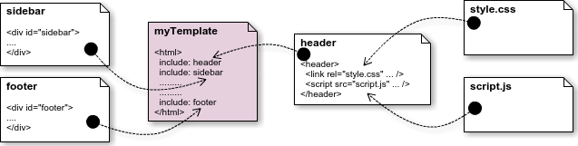

Cách tạo Custom Directive (tiếp theo)
transclude
Transclusion trong Directives
Từ “transclusion” là một từ không có nghĩa trong từ điển nhưng định nghĩa về nó có thể tìm thấy trên trang Wikipedia hoặc một số trang khác. Hầu hết các trang định nghĩa “transclusion” như sau:
“Nhúng một tài liệu hoặc một phần tài liệu vào trong một tài liệu khác bằng tham chiếu” (wiki/transclusion)
Giống như việc bạn khai báo gọi một file CSS, file Javascript vào trang HTML. Hay cũng giống như việc bạn chia template ra từng phần header, footer, sidebar, … và khi viết nội dung một template bạn sẽ nhúng từng thành phần đó vào trong để tạo thành một file hoàn chỉnh.

Thuộc tính khai báo transclude nhận giá trị kiểu boolean, mặc định là false, khi đó nội dung của directive sẽ thay thế hoàn toàn cho nội dung bên trong DOM element khai báo directive đó. Khi bạn khai báo “transclude: true” thì trong template của directive cần chỉ rõ nơi sẽ chứa nội dung được đưa vào bằng “ng-transclude”. Hình minh họa bên dưới sẽ giúp bạn hình dung dễ hơn về cách hoạt động của “transclusion” trong Angular Directives.

Như hình minh họa ở trên thì nội dung bên trong cặp thẻ <div output-text></div> sẽ được lấy ra và đưa vào trong cặp thẻ <div ng-transclude></div> của directive.
compile
Như đã giới thiệu ở phần Cách directives được biên dịch thì compiler sẽ thực hiện việc biên dịch các directive. Trong một số trường hợp bạn muốn thay đổi cấu trúc HTML của directive tùy theo điều kiện, mà việc này không thể đặt template cứng thì bạn có thể sử dụng khai báo function compile() hay link() trong directive để tái cấu trúc template cho directive khi được compiler biên dịch ra giao diện. Function compile() sẽ chỉ chạy một lần duy nhất. Function compile() khi kết thúc sẽ trả về function link(), và link() sẽ được gọi ngay sau khi directive được biên dịch xong. Nếu khai báo compile() chỉ trả về một function link(), thì mặc định Angular sẽ hiểu đó là postLink.
Ví dụ:
1 | var myApp = angular.module("demoModule", []); |
Như ví dụ trên thì compile nhận vào 2 tham số: element và attributes.
- element là đối tượng tham chiếu đến DOM element ngoài cùng, chứa tất cả các DOM element khác bên trong directive đó.
- attributes là đối tượng chứa tất cả các thuộc tính của DOM element. Để truy cập đến các thuộc tính thì bạn phải viết attributes.type.
Còn linkFunction nhận vào 3 tham số: $scope, element và attributes.
- $scope là đối tượng scope bình thường, hoặc childScope hoặc isolateScope tùy theo khai báo scope của directive đó.
- Còn element và attributes tương tự như ở khai báo compile.
link
Function link được khai báo khi chúng ta muốn đính kèm xử lý tác động, làm thay đổi nội dung phần hiển thị của directive. Chúng ta có thể dùng Javascript hoặc JQuery, nhưng trường hợp trên một giao diện có sử dụng nhiều directive có cùng một khai báo thì sẽ rất khó xác định chính xác vị trí của DOM element cần xử lý.
Khai báo link function cho directive có thể xử lý được việc hiển thị DOM elements trong phạm vi directive đó, mà không cần phải dùng Javascript selector đến chính xác DOM element cần xử lý. Như vậy, có thể hiểu khi một directive được $compile biên dịch, nó cũng sẽ được đính kèm các xử lý DOM elements bên trong đã được định nghĩa sẵn bởi link function.
VD:
Link function được chia làm 2: preLink và postLink.
- preLink: là xử lý được tự động thực thi sau khi directive được compiler biên dịch xong.
- postLink: là xử lý được đính kèm vào directive sau khi directive được compiler biên dịch xong, và preLink thực thi xong.
Sự khác nhau giữa compile và link
Mục đích của việc khai báo compile và link đều là tác động, làm thay đổi nội dung hiển thị. Vậy khi nào chúng ta dùng compile, khi nào dùng link?
Khai báo function compile() được sử dụng khi chúng ta muốn thực thi việc xử lý nội dung hiển thị của directive trước khi được compiler biên dịch ra giao diện. Và compile trả về một function link() cụ thể, function link() này sẽ được đính kèm vào directive.
Khai báo function link() được sử dụng khi chúng ta muốn đính kèm xử lý hiển thị cho directive, và function link() chỉ được thực thi sau khi directive được compiler biên dịch xong. Khác với compile, việc khai báo xử lý cho function link() có thể là interface, và implement xử lý đó ở ngoài.
Thường chỉ khai báo một trong hai function, hoặc là compile, hoặc là link. Nếu vô tình khai báo cả 2 function compile và link, thì chỉ các function link() được khai báo trong compile được thực thi.
Ví dụ:
require
Khi bạn muốn sử dụng controller của một Directive khác, thì khai báo thuộc tính “require” để yêu cầu sử dụng controller của Directive cần sử dụng. Controller của những Directive được yêu cầu sẽ được nhúng (inject) vào trong link function của Directive yêu cầu tại vị trí tham số thứ tư. Khai báo “require” nhận vào giá trị là một string, hoặc một mảng strings tên của các Directive. Mặc định tên của Directive sẽ đại diện cho phần thể hiện của controller của Directive đó. Nếu truyền vào là một mảng strings thì sẽ gọi các Directive theo thứ tự tương ứng trong mảng. Nếu không có Directive nào được tìm thấy hay Directive được yêu cầu không có controller thì sẽ bị báo lỗi.
Khai báo tên (phần hiển thị của controller) các Directive được yêu cầu với tiền tố như sau:
“element hiện tại”: Là element khai báo/sử dụng Directive đang được phát triển.
- Không có tiền tố: Xác định controller được gọi trên element hiện tại. Nếu không tồn tại controller được gọi thì sẽ ném ra lỗi.
- ^ : Xác định controller được gọi trên element hiện tại và trên thành phần cha của nó. Nếu không tồn tại controller được gọi thì sẽ ném ra lỗi.
- ^^ : Xác định controller được gọi chỉ trên thành phần cha của nó. Nếu không tồn tại controller được gọi thì sẽ ném ra lỗi.
- ? : Xác định controller được gọi trên element hiện tại. Nếu không tồn tại controller được gọi thì sẽ trả về null (pass null).
- ?^ : Xác định controller được gọi trên element hiện tại và trên thành phần cha của nó. Nếu không tồn tại controller được gọi thì sẽ trả về null (pass null).
- ?^^ : Xác định controller được gọi chỉ trên thành phần cha của nó. Nếu không tồn tại controller được gọi thì sẽ trả về null (pass null).
controller
Khai báo function controller cho Directive nếu muốn cho phép Directive khác giao tiếp với nó.
Ví dụ:
1 | app.directive('outerDirective', function() { |
Đây là code yêu cầu đính kèm một controller được đặt tên “outerDirective” cho directive. Khi một Directive khác muốn giao tiếp với “outerDirective”, thì Directive đó cần được khai báo “require” để sử dụng phần thể hiện controller của “outerDirective”.
1 | app.directive('innerDirective', function() { |
Sử dụng trong file HTML như sau:
1 | <outer-directive> |
require: ‘^outerDirective’ nói cho Angular tìm kiếm controller của Directive “outerDirective” trên element hiện tại và trên thành phần cha của nó. Trong truờng hợp này là tìm thấy thể hiện của controller của directive “outerDirective” tại thành phần cha.
controllerAs
ControllerAs dùng để định danh cho function controller của Directive. Mặc định thì Angular sẽ lấy tên của Directive làm tên định danh cho controller của directive đó.